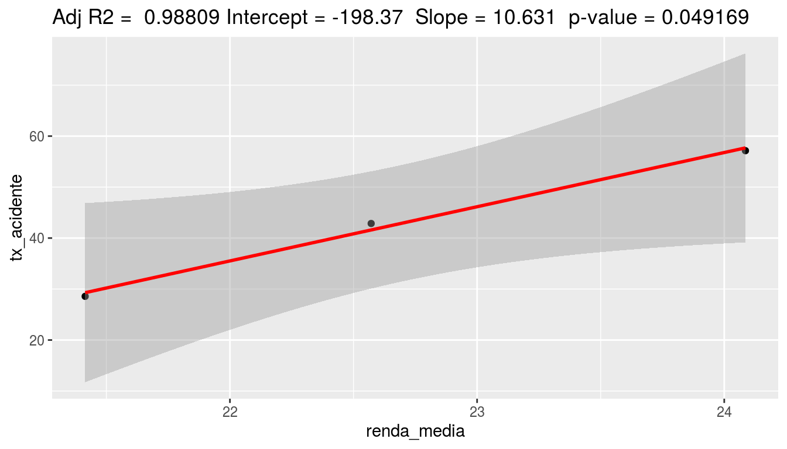
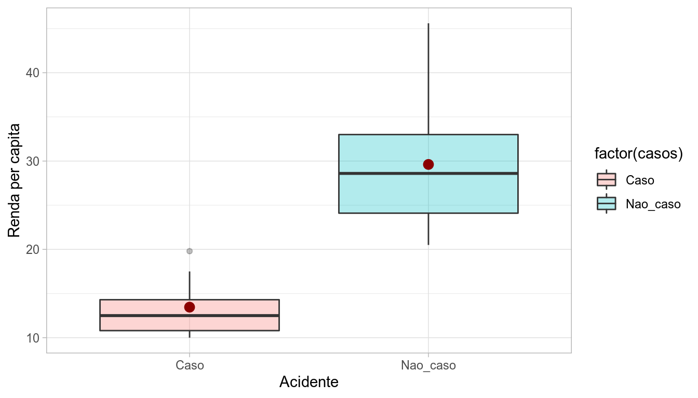

1 Estudos Ecológicos
1.1 O que são de Estudos Ecológicos ?
Segundo Medronho (2002), são estudos na qual a unidade de análise é uma população ou um grupo de pessoas (unidade de análise ou agregação), que geralmente pertence a uma área geográfica definida (ex: um país, um estado, uma cidade, etc.) e tempo definidos;
Definição Clássica: é um estudo observacional com a informação obtida e analisada no nível agregado.
1.2 O que são de Estudos Ecológicos ?
Geralmente são mais baratos e mais rápidos do que estudos envolvendo o indivíduo como unidade de análise;
Esses delineamentos procuram avaliar como os contextos social e ambiental podem afetar a saúde de grupos populacionais.
1.3 Objetivos dos Estudos Ecológicos ?
Gerar hipóteses etiológicas a respeito da ocorrência de uma determinada doença;
Testar hipóteses etiológica;
Avaliar a efetividade de intervenções na população.
Exemplo: Em 1960, Friedman mostrou uma correlação positiva entre as taxas de mortalidade por doença coronariana (DC) e as vendas de cigarros per capita, em 44 estados americanos.
Esta observação inicial contribuiu para a formulação de hipótese de que o tabagismo poderia causar doença coronariana

Figura: Coronary heart disease mortality rates in the United States per capita cigarette sales in 1960, by state. (From FRIEDMAN GD, Cigarette smoking and geographic variation in coronary heart disease mortality in the United States. J. Chronic Dis. 20: 769, 1967)
- Exemplo: Correlação entre consumo de carne em vários países e taxa de mortalidade por câncer de colon

Figura: Correlation between per capita meat consumption and colon cancer among women in various countries (From ARMSTRONG BK & DOLL R, Environmental factors and cancer incidence and mortality in different countries, with special reference to dietary practices. Int. J. Cancer, 15: 617, 1975)
1.4 Tipos de Variáveis Utilizadas
- Em uma análise ecológica, todas as variáveis são medidas agrupadas. Apenas se conhece a distribuição marginal de cada variável.
| Desfecho (Y) | |||
|---|---|---|---|
| Fator em Estudo (X) | Ocorreu | Não ocorreu | Total |
| Exposto | ? | ? | \(E_1\) |
| Não Exposto | ? | ? | \(E_0\) |
| Total | \(D_1\) | \(D_0\) | n |
1.5 Tipos de Variáveis Utilizadas
Medidas Agregadas: Medidas individuais dentro de cada grupo. ex: taxa de prevalência, proporção de fumantes;
Medidas Ambientais: Características físicas do contexto onde o grupo convive. ex: nível de poluição, precipitação;
Medidas Globais: Atributos de grupos, organizações ou lugares, que não podem ser mensurados a nível individual. ex: IDH, densidade demográfica, existência de um tipo de sistema de saúde.
1.6 Tipos de Desenhos de Estudos Ecológicos
Múltiplos Grupos: O objetivo desse tipo de estudo é a comparação entre todos os grupos ou conjuntos populacionais envolvidos no estudo. Pode ser de carater espacial ou não;
Desenhos de Séries Temporais: Avalia um determinado desfecho ao longo do tempo em uma determinada população geograficamente definida.
Desenhos Mistos: É a combinação entre os dois desenhos citados, pois avalia a evolução de um determinado desfecho em diferentes grupos populacionais ao longo do tempo.
1.7 Estudos Ecológicos - Conceitos
- “Um estudo ecológico ou agregado focaliza a comparação de grupos, ao invés de indivíduos. A razão subjacente para este foco é que dados a nível individual da distribuição conjunta de duas (ou talvez todas) variáveis estão faltando internamente nos grupos; neste sentido um estudo ecológico é um desenho incompleto”.
(Morgenstern, cap. Ecologic Studies - in Rothmans, Modern Epidemiology, 2a Ed., 1998)
- “… estudar saúde no contexto ambiental. O objetivo é ambicioso: entender como o contexto afeta a saúde de pessoas e grupo através de seleção, distribuição, interação, adaptação, e outras respostas. Medidas de atributos do indivíduo não podem dar conta destes processos […] Sem medir estes contextos, nem padrão de mortalidade e morbidade, nem o espalhamento epidêmico, nem a transmissão sexual podem ser explicados”
(Susser, Am.J.Public Health, 1994;84:825-835)
A Epidemiologia é frequentemente definida em termos do estudo da determinação da distribuição da doença. Mas não se deve esquecer que quanto mais espalhada é uma causa particular, menos ela contribui para explicar a distribuição da doença.”
“…dois tipos de perguntas etiológicas. A primeira busca as causas dos casos, e a segunda as causas da incidência.”
(Rose G. Sick individuals and sick populations. Int J Epidemiol. 2001 Jun;30(3):427-32; discussion 433-4.)
- “Aplicada à etiologia, a visão centralizada no indivíduo leva ao uso do risco-relativo como a representação básica da força etiológica: ou seja, o risco em indivíduos expostos relativo aos não-expostos. […] Esta pode ser geralmente a melhor medida de força etiológica, mas não é medida de […] importância em saúde pública.” (idem)
- “É rara a doença cuja taxa de incidência não tenha variado largamente, seja ao longo do tempo ou entre populações […] Isto significa que as causas da incidência, desconhecidas que sejam, não são inevitáveis. […] Mas identificar o agente causal pelos métodos tradicionais de caso-controle e coorte não terá sucesso se não houver suficientes diferenças na exposição dentro da população […] Nestas circunstâncias tudo os que os métodos tradicionais fazem é encontrar marcadores de susceptibilidade individual. A chave deve ser buscada nas diferenças entre populações ou em mudanças nas populações ao longo do tempo.” (idem)
- “ … torna-se aparente que muitas das explicações convencionais dos determinantes da saúde - porque algumas pessoas são saudáveis e outras não - são, na melhor das hipóteses seriamente incompletas, se não simplesmente erradas. É assim, infelizmente, porque as sociedades modernas dedicam uma parte muito grande de sua riqueza, esforço e atenção tentando manter ou melhorar a saúde dos indivíduos que compõem suas populações. Estes esforços maciços são primeiramente canalizados para os sistemas de assistência à saúde, presumivelmente refletindo uma crença que receber uma boa assistência é o mais importante determinante de saúde.”
(Evans,R.G.”Why are some people healthy and others not”)
- “Grande parte da pesquisa atual em epidemiologia está baseada no individualismo metodológico: a noção que a distribuição da saúde e doença em populações pode ser explicada exclusivamente em termos das características dos indivíduos.”
(DIEZ-ROUX AV. Bringing context back into epidemiology: variables and fallacies in multilevel analysis. AJPH,1998;88(2):216-22)
- “A evidência de modestos efeitos de vizinhança na saúde é razoavelmente consistente, apesar da heterogeneidade dos desenhos dos estudos […] e prováveis erros de medida. Ao chamar a atenção da saúde pública para os riscos associados com a estrutura social e ecológica de vizinhança, enseja-se possíveis intervenções inovadoras no nível da comunidade.”
(PICKETT KE, PEARL M. Multilevel analyses of neighbourhood socioeconomic context and health outcomes: a critical review. J Epidemiol Community Health 2001;55(2):111-22)
1.9 Falácia Ecológica ou viés de agregação
“Viés que pode ocorrer porque uma associação entre duas variáveis no nível agregado não necessariamente representa uma associação no nível individual”
O problema é que não podemos fazer inferências para níveis distintos:
- Inferir para o indivíduos a partir de dados agregados (falácia ecológica)
- Inferir para agregados populacionais a partir de dados individuais (falácia atomística ou individualista)
- “Textos de Epidemiologia fazem uma avaliação consistente sobre estudos ecológicos: eles são tentativas cruas de estimar correlações em nível individual. […] Examinar esta questão de uma perspectiva diferente - como um problema geral de validade - mostrará que a falácia ecológica, conforme frequentemente usada, encoraja três noções interrelacionadas e falaciosas:
que modelos em nível individual são mais perfeitamente especificados que os de nível ecológico,
que correlações ecológicas são sempre substitutos para correlações de nível individual, e
que variáveis de nível de grupo não causam doença.”
(Schwartz, Am.J.Public Health, 1994;84:819-824)
Um exemplo clássico de estudo ecológico :
Emile Durkheim ( sec XIX) associação ecológica positiva entre a proporção de indivíduos de religião Protestante e as taxas de suicídio ( províncias da Prússia);
Durkheim concluiu que Protestantes tinham maior probabilidade de se suicidarem do que os Católicos;
Conclusão factível mas a inferência causal não é correta: poderiam ter sido os Católicos em províncias predominantemente Protestantes a cometer os suicídios, e a metodologia ecológica não permite discernir qual das duas hipóteses está certa.
Exemplo: Um pesquisador deseja estudar a relação entre acidentes de trânsito e a renda em três cidade distintas (A, B e C).

| pop | renda_media | tx_acidente |
|---|---|---|
| A | 24.08571 | 57.14 |
| B | 22.57143 | 42.86 |
| C | 21.41429 | 28.57 |
Observando o gráfico, o pesquisador observa um possível associaçãom entre a renda e a taxa de acidentes de trânsito;
Quanto maior a renda, maior será a taxa de acidentes de trânsito.
- Observando os dados no nível individual, temos o seguinte:
- De posse dessees dados a nível individual, é possível fazer a seguinte análise:

| casos | renda_media |
|---|---|
| Caso | 13.45556 |
| Nao_caso | 29.61667 |
Dessa forma observamos que os indivíduos que sofreram algum tipo de acidente de trânsito, apresentam a menor renda;
Qual dos dois níveis de inferência está errado ?
Qual é, então, o problema ? ? ?
1.10 Árvores, Bosques ou as Florestas ?
1.10.1 As Árvores
- Suponha os dados abaixo, onde a variável “X” representa um efeito de exposição e a variável “Y” um taxa. Ao fazermos uma regressão obtemos uma correlação de apenas 0,1469 entre as duas variáveis.

1.10.2 Os Bosques
Ao estratificarmos os dados evidencia-se uma estrutura,
Ao fazer uma regressão em cada grupo obtém-se:


1.10.3 As Florestas
Tirando-se a média para cada grupo iremos obter quatro pontos sob os quais faremos uma regressão
O coeficiente de correlação obtido é rho = 0,9938

1.11 Problemas práticos
1. Numerador:
- subregistro
- duplicidade de registros
- georreferenciamento:
- não localização
- informação incorreta
- preenchimento inadequado
- mudança na classificação ao longo do tempo
2. Denominador:
- espaçamento do censo
- migração
- mudança de fronteiras (!!!!)
1.Exposição:
- pode ocorrer em diversos lugares
- dificilmente mensurável com precisão
- uso de “proxy”
- diferentes áreas para medida de exposição e de efeito, e áreas não compatíveis
- Informações mais detalhadas (PNAD, amostra do censo) não extrapoláveis para populações pequenas
2. Análise:
- migração
- multicolinearidade
Fonte: Walter, S.D.Ecological Studies - discussion. In Int. Conf. on the Analysis and Interpretation of Disease Clusters and Ecological Studies, Londres, 16-17 de dezembro, 1999.
1.12 Vantagens
Baixo custo e execução rápida, devido às fontes de dados secundários disponíveis;
Conseguem estimar bem os efeitos de uma exposição quando ela varia pouco na área de estudo, pela comparação entre áreas (os estudos individuais não conseguem);
Existem efeitos que somente podem ser medidos no nível ecológico, por ex. implantação de um novo sistema de saúde.
1.13 Desvantagens
Informações sobre comportamento, atitudes e história clínica não estão disponíveis (dados pessoais não disponíveis);
Depende da qualidade das informações disponíveis (fontes diversas);
Não se leva em conta a variabilidade da característica estudada dentro do grupo;
Difícil estabelecer temporalidade entre causa e efeito.
Migração entre grupos (por exemplo, mora em uma área e trabalha em outra).
1.14 Resumindo:
Resgatando a ecologia: estudo das complexas inter-relações entre organismos vivos e o seu meio físico.
Dados agregados – estudo ecológico clássico
Mistura de dados individuais e agregados – modelos multinível
Quando se estuda o tempo – séries temporais e modelos dinâmicos
Quando é espacial – modelos clássicos de regressão ou espaciais
Mistura espaço e tempo - modelos espaço-temporais
Envolvendo relações entre indivíduos – redes
1.15 Exercício 1:
As estatísticas internacionais indicam que o Chile tem uma das mais altas taxas de mortalidade por câncer de estômago. O país caracteriza-se por conter altos níveis de nitrato em seu solo, situação rara no mundo, neste particular. Estabeleceu-se a suspeita de ser o nitrato, em altas concentrações, um agente causal da neoplasia. Comparações regionais dentro do país, contrastando áreas com altas e baixas concentrações de nitrato, mostraram a mesma relação: alto teor da substância no solo, (alta mortalidade por este tipo de neoplasia). Um estudo caso-controle subseqüente foi realizado, mas a nível individual, não foi possível encontrar tal associação. A hipótese, entretanto, não foi totalmente descartada. Qual a importância desse estudo ecológico no estudo sobre causalidade: concentração de nitrato no solo vs câncer de estômago ?
1.16 Exercício 2:
Explique a opção de um estudo ecológico na avaliação do impacto de sucessivas campanhas de vacinação na incidência de poliomelite no Brasil. Qual seria a metodologia aplicada ?
RESUMO